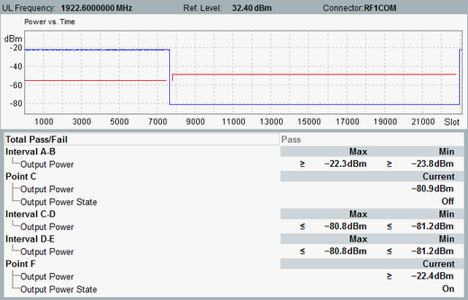

The WCDMA out-of-sync handling measurement provides all measurement results in a single view. In the upper part, a diagram shows the measured UE power vs slot within the interval A to F plus one slot.
Scaling the diagrams To modify the ranges of the Y-axis, press the "Display" softkey and use the hotkey "Y Scale...". Both manual scaling and automatic scaling are possible. Manual scaling allows you to enter a range, to display the full range or to display the default range. Automatic scaling is used by default, adapting the Y-axis to the measured values. |
Below the diagram, statistical evaluation of the results is displayed.

The diagram shows the measured UE power vs slot. The measurement captures UE output power vs. slot over 15.4 s plus 1 slot (slot 0 to slot 23000). The measurement is triggered by WCDMA signaling.
The red limit lines indicate configured limits.
- "Power Off Upper Limit" is displayed within the interval AC
- "Power On Lower Limit" is displayed within the interval CF
- The "Power Threshold Limit" is not displayed. It is only used to indicate the reliability of results for "RX Level Strategy" ≠ "Max A off F Max", if the UE transmitter is expected to be on.
– If measured power < power threshold limit, then results are unreliable. – If measured power > power threshold limit, then results are reliable.
- "Output Power": Output power is the measured power in the uplink. Due to the definition of the test, the output power cannot be correctly measured when the UE transmitter is on. In that case, the actual UE transmit power is sure greater than the measured value. This uncertainty is indicated by ≧ sign.
The sign ≦ indicates, the uncertainty due to the low TX level of the UE.– "Max / Min": Maximal / minimal measured value within the specified interval – "Current": UE output power measured during the specified point - "Output Power State": The state of UE transmitter
– For point C: off / not off – For point F: on / not on
For test reasons, also non-default Rx strategies are provided, to verify the real power-on values of the UE transmitter. Note, that for low-level values (below the "Power Threshold Limit") the results are unreliable.
For query of the results via remote control, see "Results".